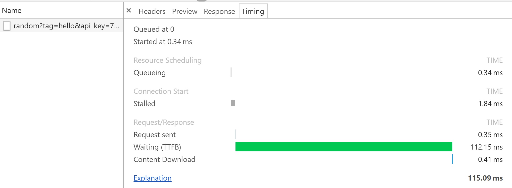

Part 3: Fetching APIs
APIs & Fetch
Unless your web site is a static application, you are going to consume data from the back-end (server) via an API.
API (Application Programming Interface) - Middle-woman that allows 2 applications to talk to each other [most often being the go-between for front-end and back-end].
Static Application - Website that only allows content changes, if you make them directly in the code, manually by hand.
Dynamic Application - Website that uses a server-side language, or JavaScript & APIs, to retrieve content from other files or a database to populate the site's content. Data in the database can be updated by a Content Management System (CMS) like WordPress, or via API interaction. This dynamically updates the content, without the author or the programmer having to edit or write new code.
There are various ways to access data from an API. We're going to use JavaScript's built-in fetch method. When a user enters an order name and submits the order in our Drink Order app, we'll use the Giphy API to fetch a gif based on the order name. Here's how that interaction works:
- We pass the API the order name.
- The API provides the order name to the server.
- Server code searches a database for a gif related to the order name.
- When the server code finds a relevant gif, it provides the gif's details from the database to the API.
- The API returns the gif's details to us.
- We handle the API response.
Tonight, we willconsole.logthe API response. But in the Bonus section of our worksheet, we display the gif image in the order details section of our Drink Order app.
You might hear other JavaScript programmers talk about using XHR (XMLHttpRequest) or jQuery's AJAX (Asynchronous JavaScript And XML) to interact with APIs. Those were methods we had to use prior to ECMAScript 2015 (ES6). When ES6 came out, it included a native method fetch, which was similar to jQuery's AJAX but doesn't require you to add a library like jQuery to use. You can use it in pure JavaScript!
In Atom in the my-scripts.js file, on the line just above
$(document).ready, you'll want to add a few empty lines, so you are ready to add our fetch method.We're going to create a function called
fetchGifByOrderName, so add the following to the empty lines you added in step 1:var fetchGifByOrderName = function (orderName) { };Let's add a variable to hold the API URL on the first line of the function. Make sure you're inside the curly braces
{}of thefetchGifByOrderNameand type:var url = ``;Yes, those are back-ticks
``and not single quotes''. We'll cover why in the next step.Now set the
urlvariable tohttps://api.giphy.com/v1/gifs/random?tag=${orderName}&api_key=75af32d089554f9a9daaac3f290e58fb. It should look like this:var url = `https://api.giphy.com/v1/gifs/random?tag=${orderName}&api_key=75af32d089554f9a9daaac3f290e58fb`;Previously, we used concatenation to combine strings with a
+. The back-ticks allow us to use template literals, which is another way of concatenation.`https://api.giphy.com/v1/gifs/random?tag=${orderName}&api_key=75af32d089554f9a9daaac3f290e58fb`is the same as:
'https://api.giphy.com/v1/gifs/random?tag=' + orderName + '&api_key=75af32d089554f9a9daaac3f290e58fb'Using a template literal (using back-ticks), we can use the
${}format to wrap our variableorderName:${orderName}TODO: Cover the parameters in the API & what they do
On a new line below the
urlvariable (but still beforefetchGifByOrderName's closing}), let's type out the native fetch structure with some comments &console.logs:fetch(url) // URL of API .then(function(response) { // Code for processing data response from API to desired data format return response.json(); }) .then(function(response) { // Code for using the data we formatted console.log(response); }) .catch(function(error) { // Code to run if API returns an error console.log(error); });Let's walk through this method... TODO
You don't technically have to indent the
.thenor.catchfor the code to work, but indenting them makes your code easier to read as you can easily see they go with thefetch(url).At this point, your
fetchGifByOrderNamemethod should look similar to this:In order for this function to run, we need to call it somewhere. Scroll up in my-scripts.js and look for the conditional you added earlier in the
submitOrdermethod. You should have anifthat checks that theorderCountis 5 or less. We want to call our function to fetch a gif only if the drink order can be ordered. Within the curly braces for the successful order condition (not if theDrink order queue is full), type:fetchGifByOrderName(orderName);. This will call our function & pass the value of theorderNamevariable through to our function.Let's try our API call out. Open (or refresh) your index.html file in Chrome, and open the Console tab in Chrome's developer tools. From the Drink Order App, select a drink, type in a name & click Order.
Remember the shortcut to open dev tools in Chrome:
cmd + shift + i(Mac) orctrl + shift + i(Windows)In the console, you should see 2 things logged. The value of the
orderNamevariable (that we console logged earlier) and the JSON response from the API request, which will show collapsed like this:Click on the little triangle to the left of
Object {data: Object, meta: Object}, and then the little triangle next todata: Object. Now you can see thedatafor the gif that the Giphy API provided us:Check your work against the part three answer key here: bit.ly/CnCPFKey3.
APIs & The Network Tab
The Console tab is great for general debugging, but there's another tab in developer tools that can be even more helpful when working with APIs. The Network tab.
In your open dev tools, click on Network and click on the Order button in the app again. This will trigger a new API request that will show as a new request like:
Hover over the Name of the request (which is the API URL we requested), and it will appear like a link. Click on the name as a link, and you'll see a new set of sub-tabs open of Headers, Preview, Response & Timing.
Response & Preview both show the API response. But Preview is in an easier to read format.
Headers shows you all the information that was sent in the API request (most of which is handled behind the scenes for you).
Timing does what it sounds like. It shows a breakdown of the request and response time.

The Network tab doesn't capture API requests alone. If you refresh Chrome, with the Network tab selected, you'll see that it also captures all the files and assets that are loaded. There is a filter icon that toggles some optional filters on and off, when clicked. You can filter by JS files, CSS files, images, etc. This is great to troubleshoot whether a file loaded or not. API calls fall into the XHR category. Click on the XHR filter to see only the API call. If you don't see one, submit an order.

Way to go! You have increased your Wonder Woman power by 200%!!